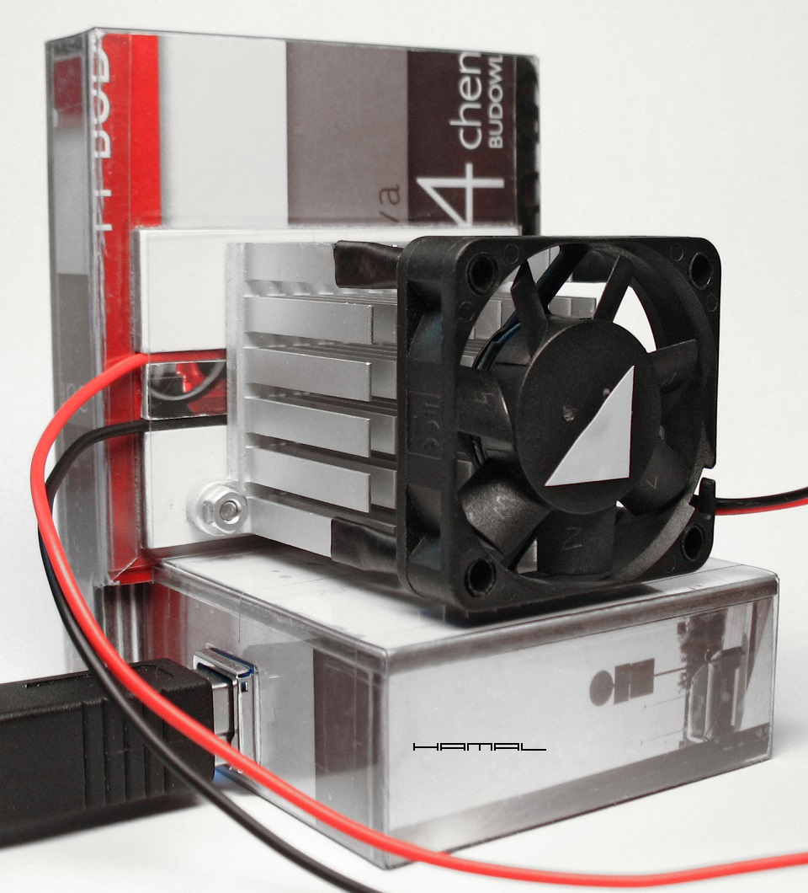
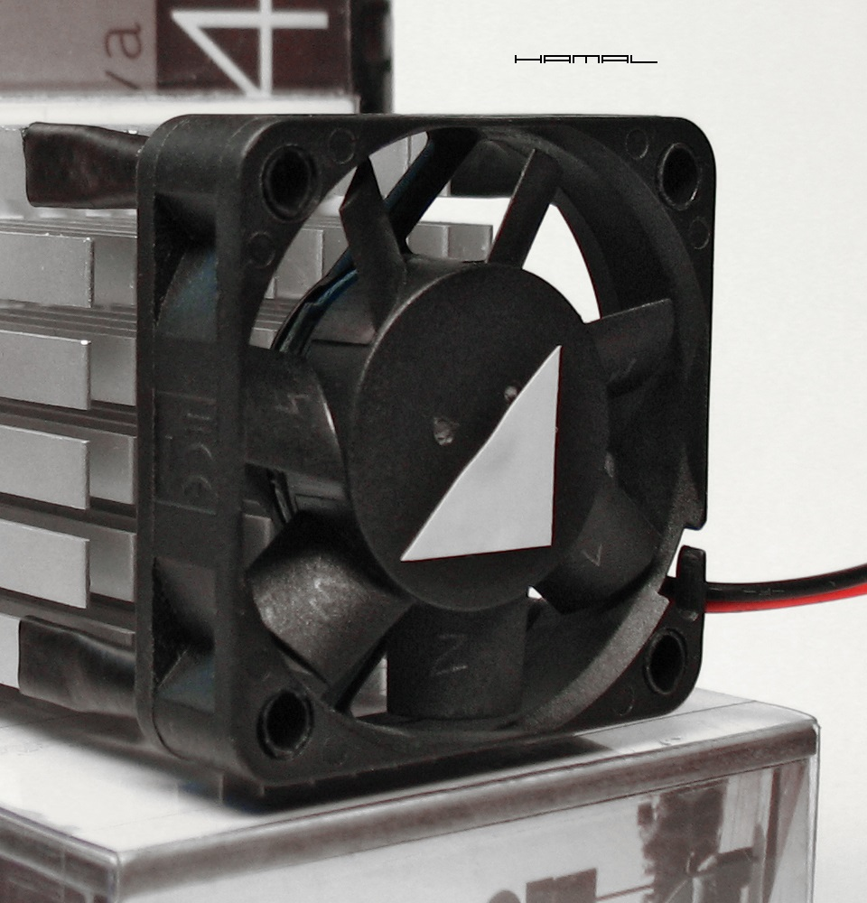
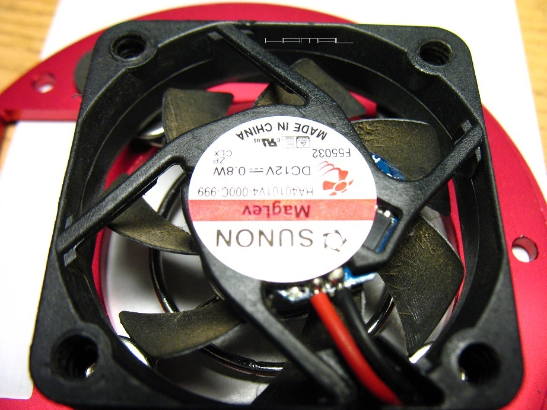

.
jako przyczyna dziwnego kształtu gwiazd na zdjęciach
|
- WIBRACJE WENTYLATORÓW - . . Od ponad dekady forsuję z uporem maniaka temat szkodliwego wpływu wibracji wentylatorów i napędów montaży na detal i kształt gwiazd na zdjęciach, tyle że dotychczas większość astrofotografów pracowała daleko pod granicą próbkowania i nie dostrzegała istniejącego problemu, przyczyny upatrując w guidingu (zresztą z seeingiem do niedawna było podobnie, Focuser zawinił...), obecnie z uwagi na coraz lepsze kamerki, mniejsze piksele i pokusę większej skali obrazowania, wibracje wentylatorów przebijają się coraz mocniej do świadomości astrofotografów, jednak na drgania silników krokowych montaży chyba przyjdzie jeszcze poczekać... kilka lat... Wibracje wentylatora kamerki najlepiej badać z kamerą umocowaną w wyciągu okularowym, napędy montażu wyłączamy, aby nie dokładały swoich drgań. Dotykamy do tylnej ścianki obudowy kamery płytką paznokci dłoni i sprawdzamy, czy czujemy jakieś drgania. Może się okazać, że nie czuć kompletnie nic, wentylator pracuje tak gładko, że jest niewyczuwalny, włączamy wtedy do kompletu napędy montażu i ponawiamy badanie, gdy pojawią się drgania, mamy nowego winnego. :) Ale wracając do wentylatorów... Niestety, jako remedium, poszukuje się wszelkich metod zamontowania wentylatora w sposób elastyczny tłumiący drgania, a winno się w pierwszej kolejności skupić na wyeliminowaniu lub zmniejszeniu samych drgań. Najkorzystniej jest dokonać zakupu kilku sztuk wentylatorów celem wymiany, majątku nie kosztują, a skoro wadliwe mogą stać się przyczyną zaprzepaszczenia jakości naszych zdjęć, gra warta zachodu. Następnie różnymi sposobami typujemy najlepsze egzemplarze, posiadające najmniej drgań, aby ostatecznie, za pomocą przyklejonych skrawków taśmy, poprawić ich wyważenie i uzyskać jeszcze gładszą pracę. Na koniec, wybrańca, najlepszego z najlepszych, montujemy bez wydziwiania w docelowym miejscu w sposób przewidziany przez konstruktorów kamerki. Poszczególne egzemplarze badam, dociskając je do przednich zębów, lub do czegoś działającego jak pudło rezonansowe gitary, podłączając je do zasilacza. Naklejam losowo na wirnik skrawek taśmy, poszukując miejsca, w którym drgania są najmniejsze, aż do uzyskania zadowalającego efektu. Oczywiście, stosujemy wentylatory SUNON MagLev wykorzystujące lewitację magnetyczną osi. Jak skuteczne są tak niepozorne zabiegi, można się przekonać naocznie też w innej dziedzinie, przykład TUTAJ, wyważenie wirnika na dole strony. Poniżej wentylator z taśmą wyważającą zainstalowany na ZWO ASI 224MC ( Mod-Mark I ). .  Na zdjęciu, na łopatkach wentylatora widać numerację wykonaną ołówkiem pozwalającą ustalić miejsce doważenia. .  - HIGIENA - . . Nie bez znaczenia jest też zagadnienie regularnego czyszczenia wentylatora, ponieważ gromadzący się na łopatkach kurz powoduje nierównomierne wyważenie oraz opór sprawiając, że oś obrotu wirnika ulega uszkodzeniu. Wentylator Sunon MagLev posiada łożysko magnetyczne, po to, aby w czasie pracy nie wytwarzał szkodliwych dla astrofotografii drgań. Pozwalając, aby na łopatkach osadzał się kurz, psujemy wybitnie jego wyważenie, co w połączeniu z wysokimi obrotami urządzenia, daje zgubny efekt dla szybkości zużywania się elementów ruchomych, a w przełożeniu, z czasem wprowadzi coraz silniejsze drgania psujące nam detal na zdjęciach. Wniosek? Czyścić regularnie !  - WIBRACJE NAPĘDÓW MONTAŻU - . . Na koniec słowo odnośnie drgań napędów montaży, problem dotyczy głównie silnika krokowego osi RA. Ja posiadam autorski montaż własnej konstrukcji i budowy, co pozwala mi dowolnie go modyfikować, jednak nie do pozazdroszczenia jest sytuacja posiadaczy fabrycznych urządzeń, w których upchane ciasno w obudowie silniki krokowe, nie pozostawiają żadnej możliwości próby zaradzenia przenoszeniu drgań na konstrukcję. W przypadku wpadania w drgania zestawu astrofotograficznego umieszczonego na wyciągu okularowym jedynym wyjściem jest metodą prób i błędów umieścić w odpowiednim miejscu odpowiedni ciężar zmieniający rezonans zestawu. Zabieg taki sprawi, że drgania silnika krokowego przenoszące się na konstrukcję nie będą znajdowały dla siebie membrany w zestawie obrazującym. 
|